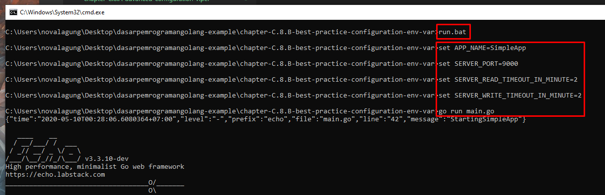

C.8.B. Best Practice Configuration Menggunakan Environment Variable
Pada bagian ini kita akan mempelajari penerapan konfigurasi pada environment variable.
C.8.B.1. Definisi
Environment variable merupakan variabel yang berada di lapisan runtime sistem operasi. Karena env var atau environment variable merupakan variabel seperti pada umumnya, maka kita bisa melakukan operasi seperti mengubah nilainya atau mengambil nilainya.
Salah satu env var yang mungkin sering temen-temen temui adalah PATH. PATH sendiri merupakan variabel yang digunakan oleh sistem operasi untuk men-specify direktori tempat dimana binary atau executable berada.
Default-nya, sistem operasi pasti mempunyai beberapa env var yang sudah ada tanpa kita set, salah satunya seperti PATH tadi, juga lainnya. Variabel-variabel tersebut digunakan oleh sistem operasi untuk keperluan mereka. Tapi karena variabel juga bisa diakses oleh kita (selaku developer), maka kita pun juga bisa mempergunakannya untuk kebutuhan tertentu.
Selain reserved env var, kita bisa juga membuat variabel baru yang hanya digunakan untuk keperluan program secara spesifik.
C.8.B.2. Penggunaan env var Sebagai Media Untuk Definisi Konfigurasi Program
Pada chapter B. Simple Configuration dan juga C. Advanced Configuration: Viper, kita telah belajar cara pendefinisian konfigurasi dengan memanfaatkan file seperti JSON maupun YAML.
Pada chapter kali ini kita akan mendefinisikan konfigurasi yang sama tapi tidak di file, melainkan di environment variable.
Definisi konfigurasi di env var banyak manfaatnya, salah satunya:
- Di support secara native oleh semua sistem operasi.
- Sudah sangat umum diterapkan di banyak aplikasi dan platform.
- Straightforward dan tidak tergantung ke file tertentu.
- Sharing konfigurasi dengan aplikasi/service lain menjadi lebih mudah.
- Mudah untuk di maintain, tidak perlu repot buka file kemudian edit lalu simpan ulang.
- ... dan banyak lagi lainnya.
Jadi bisa dibilang penulisan konfigurasi di env var merupakan best practice untuk banyak jenis kasus, terutama pada microservice, pada aplikasi/service yang distributable, maupun pada aplikasi monolith yang manajemenya ter-automatisasi.
Memang kalau dari sisi readability sangat kalah kalau dibandingkan dengan JSON atau YAML, tapi saya sampaikan bahwa meski effort koding bakal lebih banyak, akan ada sangat banyak manfaat yang bisa didapat dengan menuliskan konfigurasi di env var, terutama pada bagian devops.
C.8.B.3. Praktek
Mari kita praktekan, buat 1 folder projek baru, kemudian main.go, lalu isi file tersebut dengan kode berikut.
package main
import (
"net/http"
"os"
"strconv"
"time"
"github.com/labstack/echo"
)
func main() {
e := echo.New()
// ...
}
Pada bagian main, tepat dibawah statement pembuatan objek echo, ambil nilai konfigurasi nama aplikasi dari env var. Caranya kurang lebih seperti berikut.
confAppName := os.Getenv("APP_NAME")
if confAppName == "" {
e.Logger.Fatal("APP_NAME config is required")
}
Jadi APP_NAME disitu merupakan nama env var-nya. Umumnya env var tidak dituliskan dalam bentuk camelCase, tapi dalam bentuk UPPERCASE dengan separator kata adalah underscore. Untuk value-nya nanti tinggal kita siapkan saja sebelum proses eksekusi program.
man bash:
name A word consisting only of alphanumeric characters and underscores, and beginning with an alphabetic character or an underscore. Also referred to as an identifier.
Statement os.Getenv digunakan untuk pengambilan env var. Pada contoh di atas, terdapat pengecekan jika nilai APP_NAME adalah kosong, maka munculkan fatal error.
Kemudian tambahkan lagi statement pengambilan nilai env var SERVER_PORT.
confServerPort := os.Getenv("SERVER_PORT")
if confAppName == "" {
e.Logger.Fatal("SERVER_PORT config is required")
}
Setelah itu, tambahkan routing untuk untuk GET /index lalu definisi objek server yang nantinya digunakan untuk keperluan start webserver. Nilai server.Addr diambil dari env var SERVER_PORT.
e.GET("/index", func(c echo.Context) (err error) {
return c.JSON(http.StatusOK, true)
})
server := new(http.Server)
server.Addr = ":" + confServerPort
Kemudian tambahkan setting untuk timeout webserver, tapi hanya ketika memang timeout didefinisikan konfigurasinya.
if confServerReadTimeout := os.Getenv("SERVER_READ_TIMEOUT_IN_MINUTE"); confServerReadTimeout != "" {
duration, _ := strconv.Atoi(confServerReadTimeout)
server.ReadTimeout = time.Duration(duration) * time.Minute
}
if confServerWriteTimeout := os.Getenv("SERVER_WRITE_TIMEOUT_IN_MINUTE"); confServerWriteTimeout != "" {
duration, _ := strconv.Atoi(confServerWriteTimeout)
server.WriteTimeout = time.Duration(duration) * time.Minute
}
Bisa dilihat di atas, jika env var SERVER_READ_TIMEOUT_IN_MINUTE ada nilainya, maka diambil kemudian di konversi ke bentuk time.Duration untuk dipergunakan pada server.ReadTimeout. Nilai balik dari os.Getenv() pasti berupa string, oleh karena itu jika konfigurasi dibutuhkan dalam bentuk lain, tambahkan saja statement untuk konversi datanya.
Memang penerapan konfigurasi pada env var ini membutuhkan sedikit effort lebih, hehe.
Terakhir, tambahkan statement untuk start webserver.
e.Logger.Print("Starting", confAppName)
e.Logger.Fatal(e.StartServer(server))
C.8.B.4. Eksekusi Program
Program sudah siap, betul, tetapi konfigurasi nya belum. Nah salah satu kelebihan dari kontrol konfigurasi lewat env var adalah kita bisa definisikan sewaktu eksekusi program (sebelum statement go run).
Ada satu hal yang penting untuk diketahui. Cara set env var untuk Windows dibanding sistim operasi lainnya adalah berbeda. Untuk non-Windows, gunakan export.
export APP_NAME=SimpleApp
export SERVER_PORT=9000
export SERVER_READ_TIMEOUT_IN_MINUTE=2
export SERVER_WRITE_TIMEOUT_IN_MINUTE=2
go run main.go
Untuk Windows, gunakan set.
set APP_NAME=SimpleApp
set SERVER_PORT=9000
set SERVER_READ_TIMEOUT_IN_MINUTE=2
set SERVER_WRITE_TIMEOUT_IN_MINUTE=2
go run main.go
Agak sedikit report memang untuk bagian ini, tapi mungkin bisa diperingkas dengan membuat file .sh untuk non-Windows, dan file .bat untuk Windows. Jadi nanti bisa tinggal eksekusi sh/bat-nya saja. Atau temen-temen bisa tulis saja dalam Makefile. Untuk windows bisa kok eksekusi command make caranya dengan install make lewat Chocolatey.
Berikut adalah penampakan contoh run program lewat bat-file di Windows.

C.8.B.5. Penutup
Memang saya setuju jika lebih butuh effort baik dari sisi programming maupun dari sisi eksekusi program-nya. Tapi trust me, pada production yang notabene deployment di-automatisasi (entah itu container based, pakai orchestrator, maupun tidak), pasti lebih mudah.
Mungkin dari sini temen-temen bisa lanjut ke bab C. Dockerize Aplikasi Golang untuk melihat praktek nyata penerapan konfigurasi via env var.
- Echo, by Vishal Rana (Lab Stack), MIT license